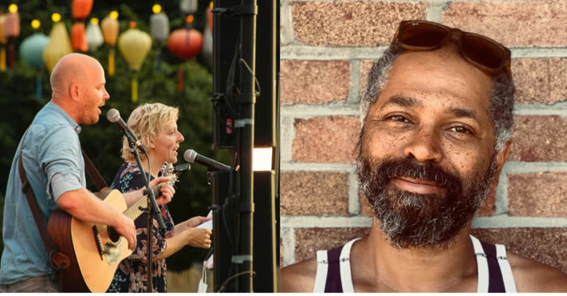
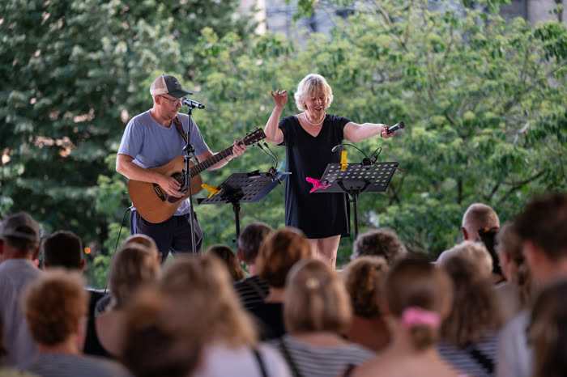
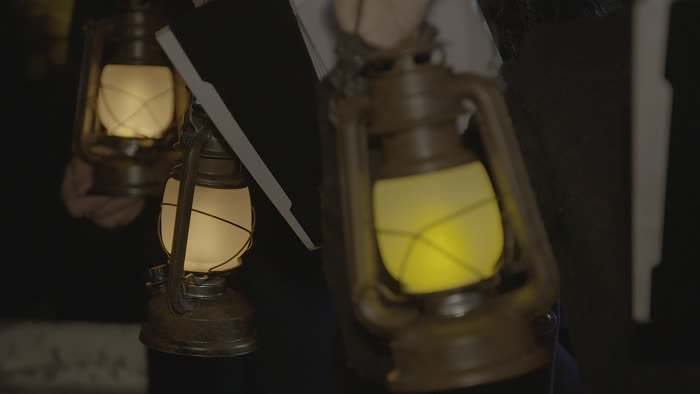
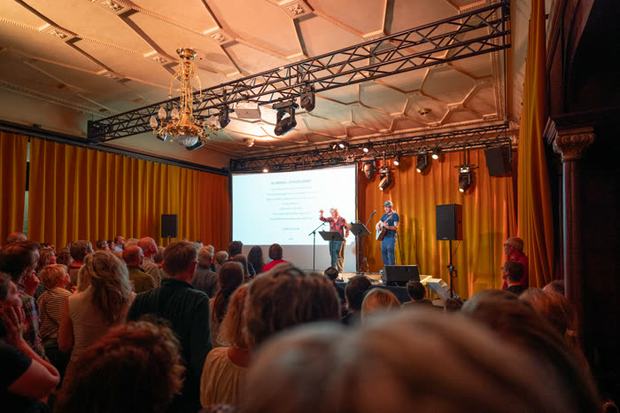

Zie Ze Zingen met Ronny Mosuse

Za 19 sept - 14:00
Onder de Stadshal Gent
Warmhartige singalong voor jong en oud die in het teken staat van samenhorigheid, met een hart voor dementie. Ism Koor & Stem en Radio 2.
meer info op 📍 — Gratis toegang
Zie Ze Zingen 100-Koppig Koor
Maandelijks in 2026 - 2027
Stadsbrouwerij Gruut
Zonder partituren maken we ons een reeks uitbundige en ingetogen kippenvel-songs eigen die iedereen kent. De reeks sluit af met een Singalong Party onder de Gentse Stadshal.
Ik wil op de wachtlijst: links.ziezezingen.be/wachtlijst
Zie Ze Zingen! in Lochristi

Vrij 9 okt - 19:00
Cultuurzaal Uyttenhove, Zavel 5, Lochristi
Laat je meevoeren door de aanstekelijke energie van Zie Ze Zingen tijdens een onvergetelijk meezingconcert voor jong en oud. Meer info
Ticketlink: links.ziezezingen.be/lochristi
Singalong Troostconcert

Za 14 nov - 18:30
CC Belgica, Kerkstraat 24, Dendermonde
Het singalong troostconcert van Zie Ze Zingen creëert samenhorigheid in donkere maanden. Door samen te zingen voelen we ons getroost en krijgen we meer kracht. Meer info
Ticketlink: links.ziezezingen.be/troostconcert
Zie Ze Zingen! The Beatles

Di 8 dec - 20:00
Balzaal VIERNULVIER
Een bijzonder sfeervolle singalong avond met bloedmooie, haalbare arrangementen van Beatles songs. Meer info
Ticketlink: links.ziezezingen.be/beatles